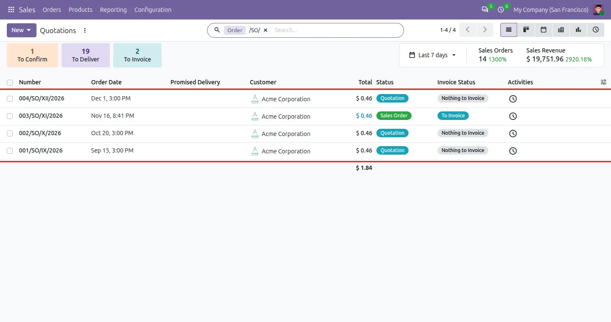
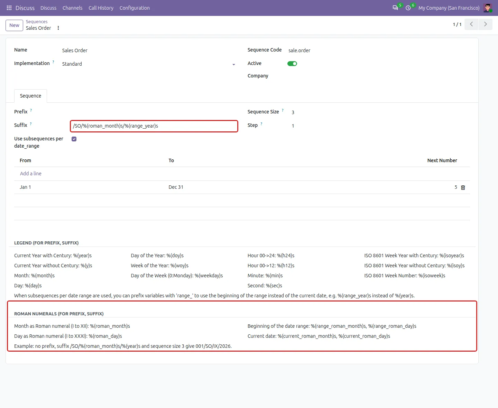
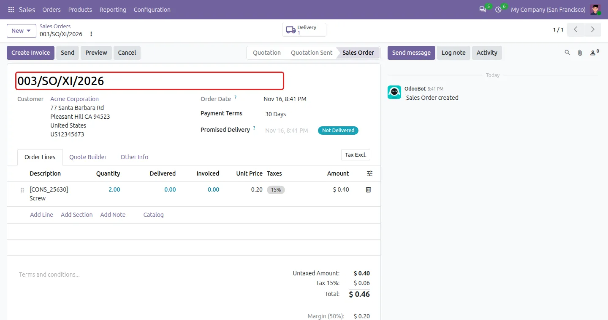
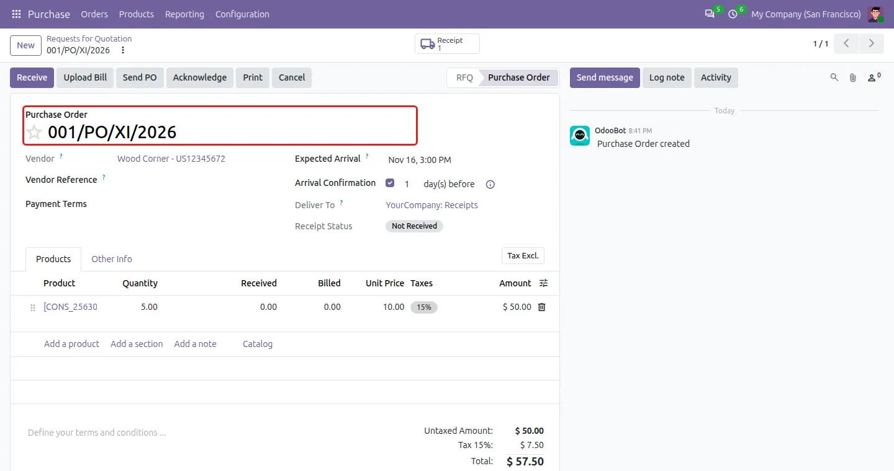
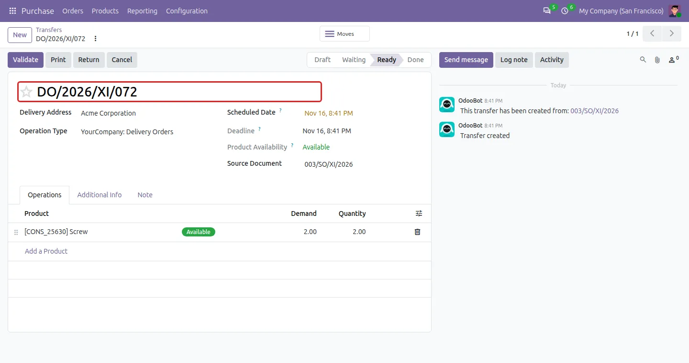
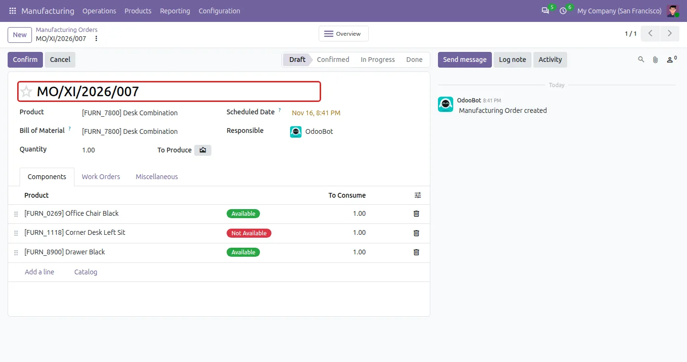
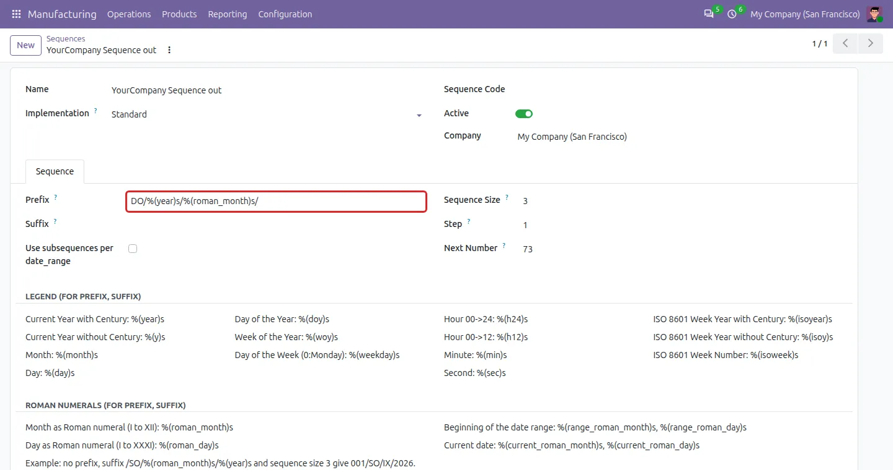

Roman Numeral Sequence - 001/SO/IX/2026 Numbering
Roman numeral month in sequence numbers, like 001/SO/IX/2026: for sales orders, purchase orders, transfers and every document numbered by a sequence.
- Price
- $4.99
- Odoo versions
- 16.0
- 17.0
- 18.0
- 19.0
- 20.0
- Technical name
tamadoo_sequence_roman_month- License
- OPL-1

Text and screenshots below are from the Odoo 20.0 version of this module.
Number your documents the Indonesian way, like 001/SO/IX/2026: the month (and day) as a Roman numeral in the prefix or suffix of any Odoo sequence. For sales, purchases, transfers and manufacturing orders.
I, II, III ... XII in your document numbers


What you get
Roman month
%(roman_month)s gives I to XII: 001/SO/IX/2026, 001/PO/XI/2026, DO/2026/XI/072, MO/XI/2026/007...
Roman day
%(roman_day)s gives I to XXXI, for numbers like 001/XXIV.IX/2026.
Date ranges
Works with yearly or monthly subsequences: the counter restarts at 001, and for sales and purchase orders the month follows the order date.
range_ and current_
%(range_roman_month)s and %(current_roman_month)s, exactly like Odoo's own range_ and current_ variables.
Mix freely
Combine with every standard placeholder: %(year)s, %(y)s, %(month)s, %(day)s... in prefix and suffix.
In the legend
The sequence form lists the new placeholders under the standard legend, with an example.
Nothing changes by itself
Your existing numbering stays as it is until you put a Roman placeholder in a sequence.
Tiny and safe
Depends on base only; no new tables, and installing it does not modify any of your sequences.
Which documents?
| ✅ Sales: quotations / sales orders | sequence Sales Order (code sale.order) |
| ✅ Purchase: RFQs / purchase orders | sequence Purchase Order (code purchase.order) |
| ✅ Inventory: receipts, deliveries, internal transfers | the sequence of each operation type |
| ✅ Manufacturing: manufacturing orders | the sequence of the manufacturing operation type |
❌ Not covered: Invoices, credit notes, vendor bills, journal entries and payments. Odoo Accounting does not number them with sequences: each new number is derived from the previous entry of the journal. Do not rename an invoice to 001/INV/IX/2026 by hand either: Odoo would continue with 001/INV/IX/2027.
How it works
- The placeholders work in the prefix and the suffix of every sequence (
ir.sequence). The four document types above were tested on Odoo 20.0; other documents numbered by a sequence (scrap orders, unbuild orders, POS, your own modules...) use the same mechanism but were not tested one by one. - The Roman month follows the same date as Odoo's
%(month)s. With subsequences per date range, that is the date of the document when the application passes it (order date of sales and purchase orders); otherwise it is the day the number is given (transfers, manufacturing orders, sequences without date ranges). %(range_roman_month)sis the first month of the date range (I for yearly ranges);%(current_roman_month)sis always today.- Changing the Sequence Prefix of an operation type in Inventory makes Odoo rewrite the prefix of its sequence; add the Roman placeholder again afterwards.
- Write
%%(roman_month)sfor a literal text, as with every Odoo placeholder.
Step by step
Set up the sequence
Sales Order sequence: no prefix, suffix /SO/%(roman_month)s/%(range_year)s, size 3, subsequences per date range so the counter restarts every year. The new placeholders are listed under the legend.

Quotations and sales orders
With date ranges, the Roman month follows the quotation date: September is IX, October X, December XII.

The sales order
The name is given when the quotation is created and is kept on confirmation.

Purchase orders
The Purchase Order sequence with /PO/%(roman_month)s/%(range_year)s.

Transfers
Delivery orders with the prefix DO/%(year)s/%(roman_month)s/; receipts and internal transfers work the same way.

Manufacturing orders
The manufacturing operation type's sequence with the prefix MO/%(roman_month)s/%(year)s/.

Any sequence
Every operation type has its own sequence under Settings > Technical > Sequences.

Set up in 5 minutes
- Install the module (depends on base only).
- Activate the developer mode and open Settings > Technical > Sequences & Identifiers > Sequences.
- Open the sequence of the document, for example Sales Order, Purchase Order or <Company> Sequence out (delivery orders).
- Put the placeholder in the prefix or suffix, for example suffix /SO/%(roman_month)s/%(year)s with Sequence Size 3 for 001/SO/IX/2026.
- Optional: tick Use subsequences per date_range to restart at 001 every year (add monthly ranges to restart every month).
Get Roman Numeral Sequence
Questions before buying? Write to tama.odoo@gmail.com.